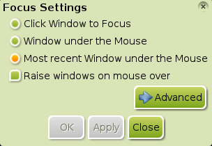

[cliqui una imatge per ampliar]
Molts dels nous usuaris de Bodhi solen fer-se les mateixes preguntes, aquí us oferim les respostes a algunes d'elles:
Per què hi ha tan poques aplicacions instal·lades?
Una part de la filosofia de Bodhi Linux es basa en el minimalisme i la llibertat d'elecció de l'usuari. Creiem que els nostres usuaris són prou intel·ligents com per triar les aplicacions que desitgen, i també oferim una forma molt fàcil de fer-ho amb l'AppCenter de Bodhi Linux. També pensem que és més fàcil i millor per vostè que, des de l'inici, construeixi el sistema que vol enlloc d'haver de treure un munt d'aplicacions que no vol i/o necessita i després haver d'instal·lar les que vol/necessita.
Com puc canviar l'idioma del sistema?

És molt simple, sempre i quan hagi instal·lat un paquet d'idioma
tal com s'explica aquí.
Primer, comprovi que el mòdul
Language està activat. Per fer-ho, vagi a Menú>Preferències>Mòduls
i, al diàleg Configuració de mòduls, navegui fins
a la pestanya Preferències, desplaci cap abaix fins que
trobi Language i seleccioni'l. Si el botó Desactiva
no és actiu, aleshores vol dir que el mòdul no s'ha activat encara.
En aquest cas, cliqui el botó Activa per activar-lo.
Ara, navegui a Menú>Preferències>Tot>Idioma>Preferències d'idioma. Després, seleccioni el paquet de l'idioma que ha instal·lat i cliqui Accepta.


Alguns usuaris pot ser que també hagin d'anar a Menú>Preferències>Tot>Idioma>Preferències
del mètode d'entrada, i desmarcar "No utilitzis cap
mètode d'entrada", seleccionar ibus, clicar
"Configura mètode d'entrada seleccionat", i, finalment, Aplica
per poder canviar correctament l'idioma.
També es pot necessitar refrescar l'escriptori amb Menú>Enlightenment>Reinicia.
Això és tot el que cal fer!
Nota:Les imatges
del quadre de diàleg Preferències d'idioma
representen la selecció del francès després d'instal·lar el paquet bodhi-language-fr
. Pot veure l'exemple a la pàgina Instal·li
programari. Com canvio els perfils de teclat?
Primer, comprovi que està activat el mòdul
Keyboard. Per fer-ho, vagi a Menú>Preferències>Mòduls
i, a la pestanya Utilitats del diàleg Configuració
de mòduls, desplaci cap abaix fins que trobi Keyboard
i el seleccioni. Si el botó Desactiva no és actiu, vol dir
que el mòdul no s'ha activat encara. En aquest cas cliqui el botó Activa
per activar-lo.
Ara, navegui a Menú>Preferències>Tot>Entrada>Teclat.
Cliqui el botó Afegeix del diàleg Preferències
teclat. Després seleccioni el perfil de teclat que
desitgi i cliqui Accepta per afegir el perfil a les
configuracions disponibles. Un cop afegit, només cal que el
seleccioni, el mogui cap a dalt de tot amb el botó Amunt,
i cliqui Accepta per tenir-lo llest!
Nota: Un cop activat el mòdul
Keyboard, pot afegir el Giny
Keyboard a un tauler o al seu
escriptori. Això permet una gran comoditat a qui hagi de canviar
molt sovint de perfil de teclat!
On són les icones d'escriptori?
Les icones d'escriptori estan activades per defecte a partir de
Bodhi 2.1.0, gràcies a la decisió de tenir com a gestor de fitxers a
Enlightenment File Manager (EFM). EFM permet
icones d'escriptori a Enlightenment (e17). Pot
afegir fitxers i llançadors a l'escriptori simplement movent aquests
fitxers/llançadors a la carpeta Desktop, situada al vostre directori
personal o home. Molt simple!
Si el que desitja és que no es vegin les icones, pot desactivar-les
a Menú>Preferències>Tot>Fitxers>Gestor
de fitxers, a la pestanya Mostra.
Com puc canviar EFM amb un altre gestor de fitxers?

Referent a eliminar o substituir EFM per utilitzar un altre gestor de fitxers (FM) o per assignar un altre FM com a FM per defecte:
- Per utilitzar un altre FM, només cal que instal·li el FM que
desitgi i utilitzi la seva entrada en el menú Aplicacions o
llançador (p.e. desktop-file) quan vulgui
utilitzar-lo.
- Per assignar a un altre FM com a FM per defecte, vagi a Menú>Preferències>Tot>Aplicacions>Aplicacions per defecte. De la secció de l'esquerra "Aplicacions per defecte" seleccioni "Fitxer", i de la secció de la dreta "Aplicació seleccionada" es desplaci fins a trobar el gestor de fitxers que desitgi. (Cal que estigui instal·lat el nou gestor de fitxers) Un cop seleccionat, cliqui Aplica. Després Accepta.
Per eliminar EFM i la seva entrada de menú Navega...
, vagi la pregunta següent. Per substituir EFM, entenent que amb
això vol assignar l'entrada del menú Navega... a
un altre FM, indicar-li que no és possible, però Enlightenment
(e17) ofereix un mòdul alternatiu que el pot assignar a
un FM extern! S'anomena Places i està instal·lat
per defecte. Per activar el mòdul, vagi a Menú>
Preferències> Mòduls. Es desplaci cap a la dreta de les
pestanyes,fins a trobar la pestanya Fitxers.
Aleshores, seleccioni Places i cliqui el botó
"Activa". Ara, per assignar el seu FM preferit, vagi a Menú>Preferències>Tot>Fitxers>Places
i marqui Utilitza un gestor de fitxers personalitzat. En
el camp de text escrigui la comanda que executa el seu FM. Cliqui Aplica
i després Accepta. Fet!.
Com puc treure/desinstal·lar EFM?

Es pot treure EFM desactivant el seu mòdul, EFM (Starter). No obstant, no el pot desinstal·lar ja que està integrat a Enlightenment (e17). Per desactivar el mòdul, vagi a Menú>Preferències>Mòduls. Seleccioni l'etiqueta Fitxers. Aleshores, seleccioni EFM (Starter) i cliqui el botó "Desactiva". Això el desactivarà i no podrà ser utilitzat; recordi que això també eliminarà l'entrada Navega... del Menú i tots els elements que depenen d'EFM, com ara les icones d'escriptori.
Per què Bodhi Linux utilitza Midori com a navegador web?

Quan vàrem fer una enquesta als nostres usuaris preguntant quin havi de ser el navegador per defecte, vam trobar-nos amb un quasi triple empat entre la versió actual de Firefox, una versió antiga de Firefox, i Chromium. Per això, enlloc de triar un d'aquests, que hauria deixat insatisfets aproximadament a 2/3 dels nostres usuaris, i que hauria fet fer-los instal·lar, de totes les maneres un altre navegador, vam anar en una direcció completament diferent: Midori!
Midori té les avantatges de ser molt lleuger i molt funcional, cosa que encaixa perfectament amb la filosofia de Bodhi Linux (vegi la primera pregunta). Midori també disposa d'una característica que permet instal·lar aplicacions directament de l'AppCenter de Bodhi Linux, cosa que altres navegadors no disposen.
Com es poden desactivar les finestres que "reboten"?

La gent que utilitza el Mòdul Composite pregunta
molt això.
Per desactivar aquest efecte, vagi a Menú>Preferències>Tot>Aparença>Composició.
Cliqui a Avançat. A la part inferior de la finestra, seleccioni qualsevol
altra cosa diferent a default, cliqui Aplica, i les finestres
ja no "rebotaran".
Per què haig de clicar la barra de títol d'una finestra per portar-la al capdavant?

{kind=link}
Això es coneix com a "Focus de punter" i és el mètode estàndard de focalitzar finestres a UNIX des de fa molt de temps. És també l'opció per defecte dels desenvolupadors d'Enlightenment, i per això Bodhi Linux ha triat respectar la seva decisió com a comportament predeterminat.
També tingui en compte que les pulsacions de tecles seran rebudes per la finestra que té el focus, que no és necessàriament la que està al damunt.
Entenem que hi ha molts usuaris que no estan acostumats a aquest comportament, però es pot configurar molt fàcilment per adaptar-lo als seus gustos. Només cal que vagi a Menu>Preferències>Tot >Finestres>Focus de finestra. Seleccioni l'opció que prefereixi, cliqui Aplica, i Tanca.
El focus de punter pot ser un mètode molt més productiu, no és difícil: doneu-li una oportunitat!
Més informació...
Trobarà més Preguntes freqüents a la Bodhi Linux Doc Wiki. Sempre s'estan actualitzant i pot editar-les qualsevol. Dit això, si vostè té qualsevol pregunta i resposta que creu que hauria d'afegir-se a les Preguntes freqüents, ho faci!